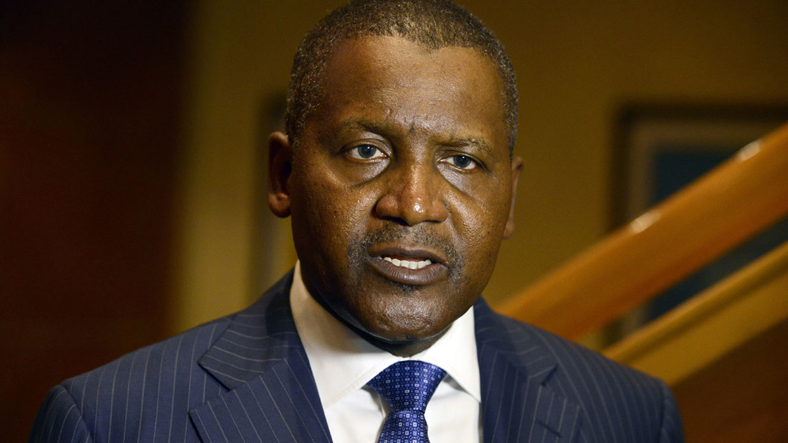

Meet top ten nigeria Billionaires
According to Forbes, as of 2022, the top ten billionaires in Nigeria are :
- Aliko Dangote - $11.8 billion
- Mike Adenuga - $9.9 billion
- Femi Otedola - $1.85 billion
- Abdulsamad Rabiu - $1.6 billion
- Theophilus Danjuma - $1.55 billion
- Tony Elumelu - $1.45 billion
- Folorunsho Alakija - $1.1 billion
- Jim Ovia - $1 billion
- Orji Uzor Kalu - $900 million
- Gilbert Chagoury - $800 million
1. Aliko Dangote

Aliko Dangote, the richest person in Nigeria, is a businessman and investor who made his fortune in the cement, sugar,
and flour industries.
Aliko Dangote is a Nigerian businessman and investor who is considered one of the wealthiest and most influential people
in Africa. He is the founder and president of Dangote Group, a conglomerate with interests in a variety of sectors
including cement, sugar, flour, salt, and real estate.
Dangote was born on April 10, 1957 in Kano, Nigeria. He received a degree in business studies from Al-Azhar University
in Cairo, Egypt before returning to Nigeria to begin his career. In 1981, he founded Dangote Group and began building it
into a major player in the Nigerian and African economies.
The Dangote Group is now one of the largest industrial conglomerates in Africa, with operations in over 15 countries
across the continent. In addition to his business pursuits, Dangote is also a philanthropist and has been involved in
various charitable initiatives, including the construction of a number of hospitals and schools in Nigeria. He is also a
member of the Africa Progress Panel, a group of influential leaders who work to promote sustainable development in
Africa.
2. Mike Adenuga

Mike Adenuga is the second-richest person in the country and is a businessman who made his fortune in the telecommunications and oil and gas sectors.
Mike Adenuga is a Nigerian businessman and investor who is considered one of the wealthiest and most influential people
in Africa. He is the founder and chairman of Globacom, a Nigerian telecommunications company, and Conoil, an oil
exploration and production company.
Adenuga was born on April 29, 1953 in Ibadan, Nigeria. He received a degree in business administration from Northwestern
Oklahoma State University before returning to Nigeria to begin his career. In 1979, he founded Conoil, which has since
become a major player in the Nigerian oil and gas industry. In 2006, he founded Globacom, which has become one of the
leading telecommunications companies in Nigeria.
In addition to his business pursuits, Adenuga is also a philanthropist and has been involved in various charitable
initiatives, including the construction of a number of hospitals and schools in Nigeria. He is also a member of the
Africa Progress Panel, a group of influential leaders who work to promote sustainable development in Africa.
3. Femi Otedola

Femi Otedola is a businessman and investor who made his fortune in the oil and gas industry.
Femi Otedola is a Nigerian businessman and investor who is considered one of the wealthiest people in Africa. He is the
founder and chairman of Forte Oil, a Nigerian oil marketing company, and Zenon Petroleum and Gas, a Nigerian downstream
oil and gas company.
Otedola was born on November 4, 1962 in Ibadan, Nigeria. He received a degree in economics from the University of Lagos
before beginning his career in the oil and gas industry. In 2003, he founded Forte Oil, which has become a major player
in the Nigerian fuel market. In 2011, he founded Zenon Petroleum and Gas, which is involved in the distribution and
marketing of petroleum products in Nigeria.
In addition to his business pursuits, Otedola is also a philanthropist and has been involved in various charitable
initiatives, including the construction of a number of hospitals and schools in Nigeria. He is also a patron of the arts
and has supported the development of the Nigerian film industry.
4. Abdulsamad Rabiu

Abdulsamad Rabiu is a businessman who made his fortune in the cement and steel industries.
Abdulsamad Rabiu is a Nigerian businessman and investor who is considered one of the wealthiest and most influential
people in Africa. He is the founder and chairman of BUA Group, a Nigerian conglomerate with interests in a variety of
sectors including cement, steel, sugar, real estate, and infrastructure.
Rabiu was born on August 26, 1960 in Kano, Nigeria. He received a degree in economics from Capital University in
Columbus, Ohio before returning to Nigeria to begin his career. In 1988, he founded BUA Group, which has since become a
major player in the Nigerian and African economies.
In addition to his business pursuits, Rabiu is also a philanthropist and has been involved in various charitable
initiatives, including the construction of a number of hospitals and schools in Nigeria. He is also a member of the
Africa Progress Panel, a group of influential leaders who work to promote sustainable development in Africa.
5. Theophilus Danjuma

Theophilus Danjuma is a retired military officer and businessman who made his fortune in the oil and gas industry.
Tony Elumelu is a Nigerian businessman and philanthropist who is considered one of the wealthiest and most influential
people in Africa. He is the founder and chairman of the Tony Elumelu Foundation, a philanthropic organization that
supports entrepreneurship and economic development in Africa, and the founder and chairman of the United Bank for Africa
(UBA), a pan-African financial services group.
Elumelu was born on March 22, 1963 in Onicha-Ukwu, Nigeria. He received a degree in economics from Ambrose Alli
University before beginning his career in the banking industry. In 1989, he joined UBA and rose through the ranks to
become the CEO of the bank. In 2010, he left UBA to focus on his philanthropic work and founded the Tony Elumelu
Foundation, which has since become one of the leading philanthropic organizations in Africa.
In addition to his business and philanthropic pursuits, Elumelu is also a member of the Africa Progress Panel, a group
of influential leaders who work to promote sustainable development in Africa. He is also a member of the World Economic
Forum's Global Agenda Council on Africa and has served on the boards of a number of other organizations, including the
African Development Bank and the UN Sustainable Energy for All Initiative..
6. Tony Elumelu

Tony Elumelu is a businessman and philanthropist who made his fortune in the banking and investment sectors.
Tony Elumelu is a Nigerian businessman and philanthropist who is considered one of the wealthiest and most influential
people in Africa. He is the founder and chairman of the Tony Elumelu Foundation, a philanthropic organization that
supports entrepreneurship and economic development in Africa, and the founder and chairman of the United Bank for Africa
(UBA), a pan-African financial services group.
Elumelu was born on March 22, 1963 in Onicha-Ukwu, Nigeria. He received a degree in economics from Ambrose Alli
University before beginning his career in the banking industry. In 1989, he joined UBA and rose through the ranks to
become the CEO of the bank. In 2010, he left UBA to focus on his philanthropic work and founded the Tony Elumelu
Foundation, which has since become one of the leading philanthropic organizations in Africa.
In addition to his business and philanthropic pursuits, Elumelu is also a member of the Africa Progress Panel, a group
of influential leaders who work to promote sustainable development in Africa. He is also a member of the World Economic
Forum's Global Agenda Council on Africa and has served on the boards of a number of other organizations, including the
African Development Bank and the UN Sustainable Energy for All Initiative.
7. Folorunsho Alakija

Folorunsho Alakija is a businesswoman who made her fortune in the oil and gas industry.
Folorunsho Alakija is a Nigerian businesswoman and philanthropist who is considered one of the wealthiest and most
influential women in Africa. She is the founder and vice chair of Famfa Oil, a Nigerian oil exploration and production
company, and the founder of the Rose of Sharon Foundation, a philanthropic organization that supports education, health,
and economic development in Nigeria.
Alakija was born on July 15, 1951 in Lagos, Nigeria. She received a degree in fashion design from the American College
in London before beginning her career in the fashion industry. In the 1990s, she entered the oil and gas industry and
founded Famfa Oil, which has since become a major player in the Nigerian oil and gas sector.
In addition to her business and philanthropic pursuits, Alakija is also a member of the Africa Progress Panel, a group
of influential leaders who work to promote sustainable development in Africa. She is also a member of the board of
directors of the Nigerian National Petroleum Corporation and has served on the boards of a number of other
organizations, including the United Bank for Africa and the First Bank of Nigeria.
8. Jim Ovia

Jim Ovia is a businessman and philanthropist who made his fortune in the banking and telecommunications sectors.
Jim Ovia is a Nigerian businessman and philanthropist who is considered one of the wealthiest and most influential
people in Africa. He is the founder and chairman of Zenith Bank, a Nigerian financial services group, and the founder of
the Jim Ovia Foundation, a philanthropic organization that supports education and economic development in Nigeria.
Ovia was born on September 29, 1952 in Agbor, Nigeria. He received a degree in economics from the University of Benin
before beginning his career in the banking industry. In 1990, he founded Zenith Bank, which has since become one of the
leading financial services companies in Nigeria.
In addition to his business and philanthropic pursuits, Ovia is also a member of the Africa Progress Panel, a group of
influential leaders who work to promote sustainable development in Africa. He is also a member of the board of directors
of the Central Bank of Nigeria and has served on the boards of a number of other organizations, including the United
Bank for Africa and the Nigeria Stock Exchange.
9. Orji Uzor Kalu

Orji Uzor Kalu is a businessman and politician who made his fortune in the banking, media, and oil and gas industries.
Orji Uzor Kalu is a Nigerian businessman and politician who is considered one of the wealthiest and most influential people in Africa. He is the founder and chairman of the SLOK Holding Group, a Nigerian conglomerate with interests in a variety of sectors including banking, media, oil and gas, and real estate, and the founder of the Orji Uzor Kalu Foundation, a philanthropic organization that supports education and economic development in Nigeria.
Kalu was born on April 21, 1960 in Aba, Nigeria. He received a degree in political science from the University of Maiduguri before beginning his career in the banking industry. In 1989, he founded SLOK Holding, which has since become a major player in the Nigerian and African economies.
In addition to his business and philanthropic pursuits, Kalu is also a politician and has served as the governor of Abia State in Nigeria. He is a member of the All Progressives Congress, a political party in Nigeria, and has held a number of other positions in the Nigerian government, including serving as the chairman of the Nigeria Football Association.
10. Gilbert Chagoury

Gilbert Chagoury is a businessman and philanthropist who made his fortune in the construction industry.
Gilbert Chagoury is a Nigerian businessman and philanthropist who is considered one of the wealthiest and most
influential people in Africa. He is the founder and chairman of the Chagoury Group, a Nigerian conglomerate with
interests in a variety of sectors including construction, real estate, and telecommunications, and the founder of the
Gilbert Chagoury Foundation, a philanthropic organization that supports education, health, and economic development in
Nigeria.
Chagoury was born on December 2, 1943 in Lagos, Nigeria. He received a degree in civil engineering from the University
of Manchester before beginning his career in the construction industry. In the 1970s, he founded the Chagoury Group,
which has since become a major player in the Nigerian and African economies.
In addition to his business and philanthropic pursuits, Chagoury is also a member of the Africa Progress Panel, a group
of influential leaders who work to promote sustainable development in Africa. He is also a member of the board of
directors of the Nigerian National Petroleum Corporation and has served on the boards of a number of other
organizations, including the United Bank for Africa and the Nigerian Stock Exchange.